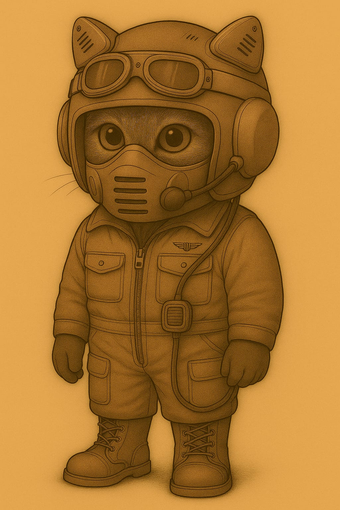
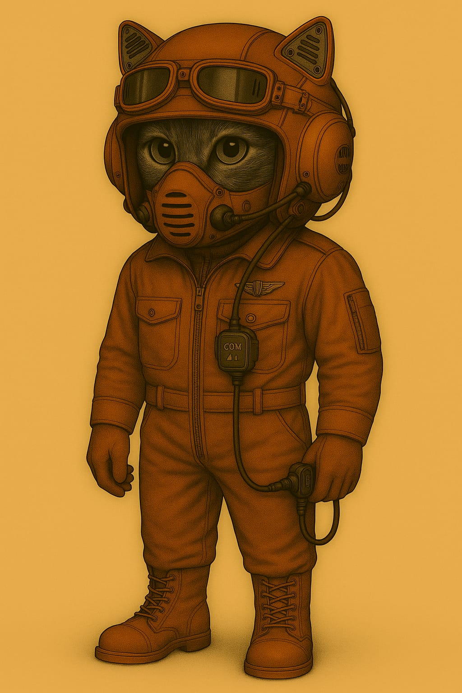

🔖 AUSRÜSTUNG: Piloten-Kommunikationssystem
- Anzug: A-P-x-x-3.1
- Helm: H-P-N-x-1.1
- Leichtatmer: L-P-M-H-1.2
- Kennziffer: FLD-A3K-001
- Einsatzbereich: Flugdienst – Kolonialtransporte – Kontrollflüge
- Ausgabestatus: Standardausstattung für registriertes Flugpersonal (aktive Staffel & Reserve)


🔧 Technische Kurzbeschreibung
Das Piloten-Kommunikationssystem besteht aus einem modularen Fluganzug (Typ A-P-x-x-3.1), einem felinisch angepassten IN-Helm (Typ H-P-N-x-1.1) und einem helmgetragenen Leichtatmer mit Mikrofonmodul (Typ L-P-M-H-1.2). Es ermöglicht die sichere Teilnahme an kolonialen Raumflugoperationen im atmosphärisch abgeschirmten Bereich – mit Bordfunkintegration und anatomischer Kompatibilität für felinische Nutzer.
📡 Einsatzprofil & Einschränkungen
Verwendung vorgesehen für:
- Start- und Landeoperationen
- Kontrollflüge innerhalb von Atmosphärenkuppeln
- Koloniale Versorgungseinsätze
- Kurzzeitige Ausseneinsätze mit Leichtatmer L-P-M-H-1.2
Nicht geeignet für:
- Langzeitexposition ohne atmosphärische Abschirmung
- Einsätze mit eigenständiger Funkübertragung
- Hochvakuumzonen ohne druckkompensierende Systeme
🛠 Spezialmerkmale
- Kommunikationsweg ausschliesslich über gekoppelten Bordfunk
- Helmlautsprecher optimiert für felinisches Gehör
- Mikrofonmodul direkt im Filterelement integriert
- Kompatibilität mit:
- Cockpits der Serien T-12 bis T-44
- Gurtsystem „Kragensicher – 3-Punkt“
- Cockpitprotokoll „V-Mars 7“
📎 Hinweise zur Verwendung
- Helmsitz auf Dichtigkeit prüfen
- Mikrofonmodul nach Filterwechsel testen
- Funkverbindung vor Einsatzflug über Bordprotokoll initialisieren
- Keine Verwendung ausserhalb atmosphärischer Zonen
🗂 Eintrag geprüft & freigegeben durch:
- Abteilung für Flugdienststandardisierung – OKKT (Oberkommando Kolonialtechnik)
- etzte Überarbeitung: [Datum eintragen]
- tatus: aktiv – Ausgabe erfolgt zentral über Staffelversorgung
👕 Anzug A-P-x-x-3.1
- Einteiler mit Reissverschlussfront und verstärkten Nähten
- Material: Mars-PolyFas (atmungsaktiv, staubgeschützt)
- Ausrüstungspunkte:
- 2 Brusttaschen mit Patte
- 2 Oberschenkeltaschen mit Reissverschluss
- 1 Oberarmtasche (links)
- Brustabzeichen „Flugdienst“
- Farbe: Flugdienst-Standard rostbraun
Helm H-P-N-x-1.1 (Modifizierter IN-Helm)
- Konstruktion gemäss Interstellarer Norm (IN), angepasst für felinische Kopfgeometrie
- Lautsprechereinheiten oberhalb des Helmzentrums (felinische Ohrenposition)
- Keine internen Sendeeinheiten – reines Empfangssystem
- Seitenpolster ohne Technik – dienen der Stabilisierung
- Funkverbindung ausschliesslich über externe Quelle (z. B. Bordfunkgerät)
😷 Leichtatmer L-P-M-H-1.2
- Kompaktsystem, direkt am Helm befestigt
- Integriertes Mikrofonmodul mit Rauschunterdrückung
- Direkte Verbindung zum Bordkommunikationssystem (keine Kabelverlegung notwendig)
- Dreifach-Belüftung, Dichtsitz unter dem Helmrand
- Wartungsfreundliche Filtereinheit
🥾 Stiefel (Flugeinsatzmodell)
- Staubabweisend, antistatisch
- Flaches Schnürsystem für Gurtsystemkompatibilität
- Profilsohle für optimalen Halt in Steuerpedalen